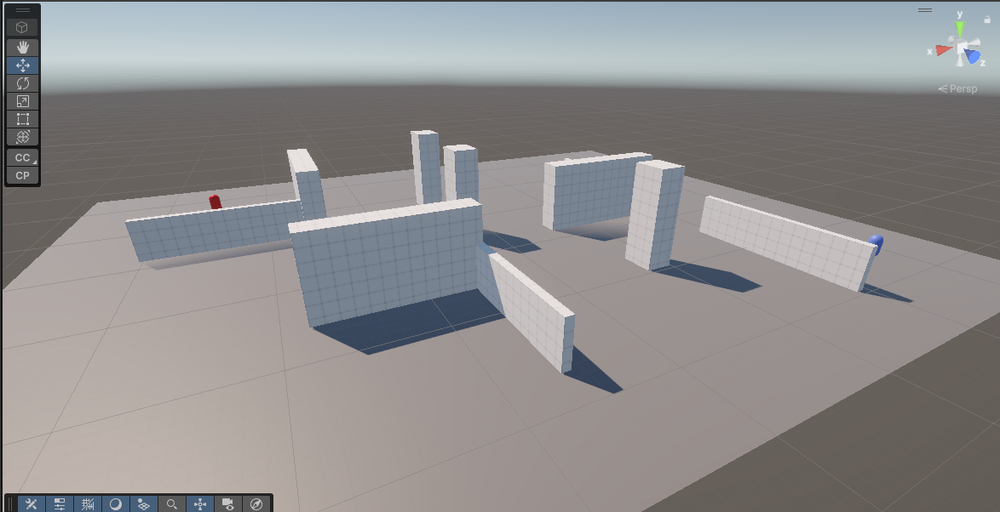
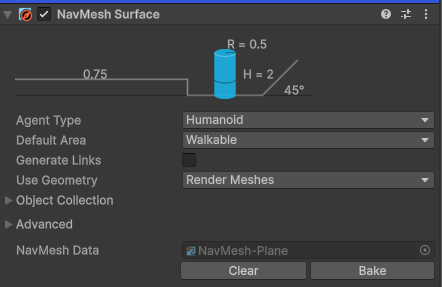
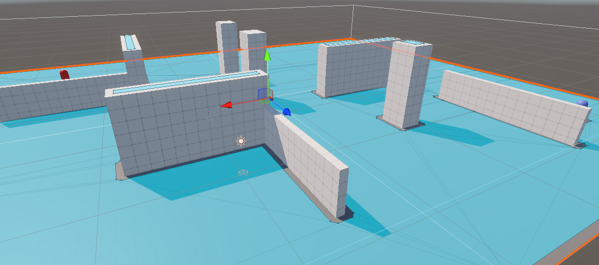
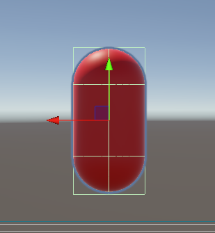
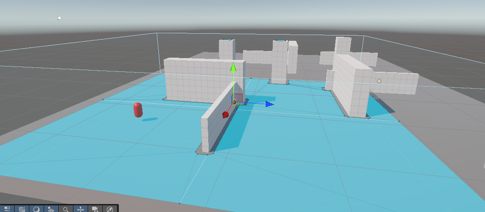
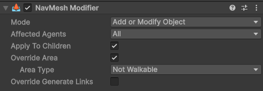
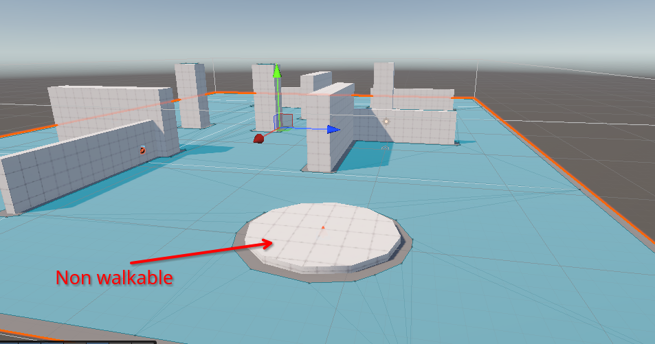
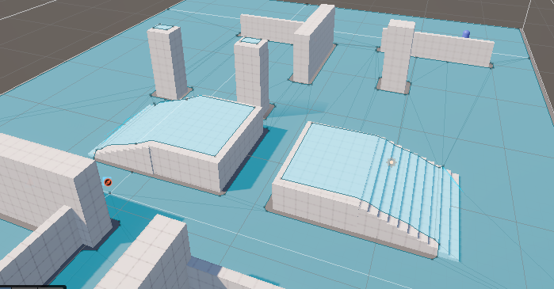
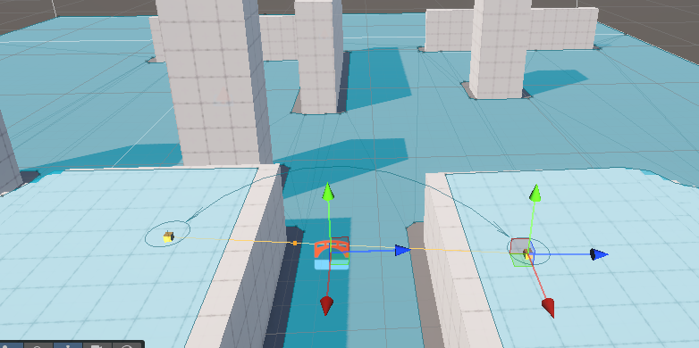
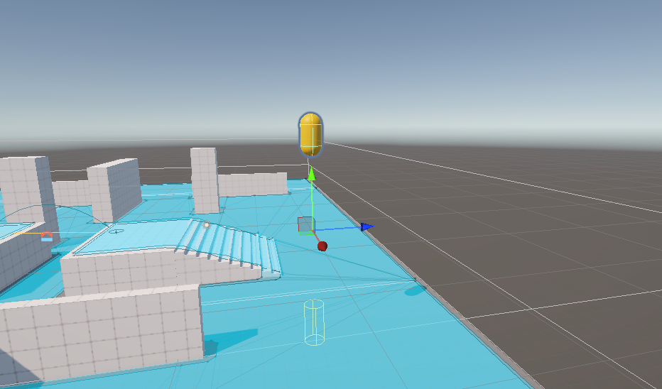

2.4 Pathfinding 3D amb AI Navigation
El Pathfinding és un aspecte fonamental en el desenvolupament de videojocs, especialment en entorns 3D on els personatges i objectes han de moure's de manera eficient i realista. Unity proporciona una eina integrada anomenada AI Navigation que facilita la implementació de sistemes de pathfinding en jocs 3D.
Creació del projecte
Crea un projecte 3D nou a Unity.
Una vegada creat importa el paquet ProBuilder (Window > Package Manager > Unity Registry > ProBuilder).
Comprova també que tens el paquet AI Navigation instal·lat (Window > Package Manager > Unity Registry > AI Navigation).
Crearem un escenari bàsic amb un pla com a terra i algunes estructures, com a pilars i parets, utilitzant ProBuilder.
Afegeix a les parets i pilars un Rigidbody i marca l'opció Is Kinematic per a que no siguen afectats per la física.
Crea també 2 empty objects i anomena'ls Agent i Player. Crea dins de cada una càpsula. Afegeix un component Rigidbody a l'Agent i al Player. Congela la rotació del Player en X i Z.

Afegeix un script de moviment bàsic al Player per a que es puga moure per l'escenari. Anomena'l PlayerMovement.cs i afegeix el següent codi:
1 2 3 4 5 6 7 8 9 10 11 12 13 14 15 16 17 18 19 20 21 22 23 24 25 26 27 28 29 30 31 32 33 34 35 36 37 38 39 40 41 42 43 44 45 46 47 48 49 50 51 52 53 54 55 56 57 58 59 60 61 62 63 64 65 66 67 68 69 70 | |
Afegeix al player una component CharacterController i afegeix les referències d'Input Actions des de l'inspector, utilitzant les accions de moviment i salt que estan creades per defecte.
Configuració de la navegació
En la jerarquia, afegeix un element NavMesh Surface (AI > NavMesh Surface). Això crearà un component que ens permetrà generar el NavMesh per a l'escena.

Les opcions que té son:
- Agent Type: Defineix el tipus d'agent que utilitzarà aquest NavMesh. Pots crear diferents tipus d'agents amb diferents mides i característiques.
- Default Area: Defineix l'àrea per defecte del NavMesh. Les opcions bàsiques són Walkable (transitable), Not Walkable (no transitable) i Jump (salt).
- Use Geometry: Defineix quina geometria s'utilitzarà per generar el NavMesh.
- Object Collection: Defineix quins objectes de l'escena s'inclouran en la generació del NavMesh.
Polsa el botó Bake per generar el NavMesh. Es mostrarà una malla blava que indica les zones transitables per l'agent.
Important
Cada vegada que faces canvis en l'escenari hauràs de tornar a polsar el botó Bake per actualitzar el NavMesh.

Fixa't que els pilars i parets no tenen la malla blava, ja que són obstacles. Però el Player i l'Agent tampoc la tenen, el que farà que l'agent no puga passar per eixes zones, inclosa la seua. Observa també que les parets més amples i els pilars tenen la malla blava, però no ha de ser zones transitables.
Per solucionar això crearem 3 capes noves anomenades Walls, Agents i Player. Assigna a pilars i parets la capa Walls, Agents a l'Agent i al Player la capa Player.
En NavMesh Surface, a Object Collection, selecciona Include Layers i desmarca les Agents i Player. Torna a fer click a Bake per a que s'actualitze el NavMesh.
Configuració de l'agent
Selecciona l'Agent i afegeix-li el component NavMesh Agent.
Les ocpions més importants són:
- Base Offset: Defineix l'altura de l'agent respecte al terra.
- Steering: Defineix com l'agent es mourà pel NavMesh.
- Speed: Defineix la velocitat de moviment de l'agent.
- Angular Speed: Defineix la velocitat de gir de l'agent.
- Acceleration: Defineix l'acceleració de l'agent.
- Stopping Distance: Defineix la distància a la qual l'agent s'aturarà respecte al destí.
- Auto Braking: Si està activat, l'agent reduirà la velocitat quan s'acosti al destí.
- Obstacle Avoidance: Defineix com l'agent evitarà els obstacles en el seu camí.
- Radius: Defineix el radi de l'agent per a la detecció de col·lisions.
- Height: Defineix l'altura de l'agent per a la detecció de col·lisions.
- Quality: Defineix la qualitat de l'evitació d'obstacles.
Ajusta els paràmetres Base Offset i Height per a que l'agent coincidisca amb la càpsula.

Crea un script anomenat EnemyMovement.cs i afegeix el següent codi per a que l'agent es desplace cap al Player:
1 2 3 4 5 6 7 8 9 10 11 12 13 14 15 16 17 18 | |
Passem el Player com a referència des de l'inspector.
Amb la referència del NavMesh Agent i el destí assignat al Player, simplement hem d'especificar el destí de l'agent per a que es moga cap al player evitant els obstacles.
Comprova que en executar l'escena l'agent es desplace cap al Player evitant els obstacles.
Navegació limitada per volum
Suposem que volem que l'agent només es desplace per una zona concreta de l'escenari. En aquest cas podem posar la propietat Collect Objects de NavMesh Surface a Volume i delimitar l'àrea en la qual volem que es puga moure l'agent.

Podem moure el volum i editar la seua mida. Torna a polsar Bake per a que s'actualitze el NavMesh. Si executem el joc, ara veurem que l'agent només es mou dins del volum definit.
NavMesh Modifier
El component NavMesh Modifier ens permet modificar les propietats del NavMesh en funció dels objectes als quals s'aplica. Per exemple, podem utilitzar-lo per a definir àrees com a transitables o no transitables, o per a canviar el cost de moviment en certes zones.
Sel·lecciona les parets i pilars que tenen una malla de navegació a dalt i afegeix-los el component NavMesh Modifier. Marca l'opció Override Area i selecciona Not Walkable. Torna a polsar Bake per a que s'actualitze el NavMesh.

Aquesta opció és útil per a definir zones específiques com a no transitables, per exemple una zona d'aigua que no volem que l'agent puga creuar.

NavMesh Link
El component NavMesh Link ens permet crear connexions entre diferents parts del NavMesh que no estan connectades de manera natural. Això és útil per a crear ponts, escales o altres elements que permeten als agents moure's entre zones separades.
Crea 2 escales i 2 cubs que funcionen com a plataformes. Assegurat de que tenen la inclinació adequada per a que l'agent i el player puguen pujar-les.
Si polsem Bake veurem que s'ha creat la malla de navegació, però si el player salta d'una plataforma a l'altra, l'agent no podrà seguir-lo perquè no hi ha connexió entre les dues plataformes.

Tip
Si veus que en les escales queden zones sense malla de navegació, pots moure el NavMesh Surface lleugerament cap amunt per a que es generen correctament.
Per a solucionar això, creem, en la jerarquia, un NavMesh Link entre les dues plataformes. El link es crea entre els 2 cubs grocs. Podem moure-lo i rotar-lo per a col·locar-lo entre les dues plataformes. Sel·leccionant els cubs grocs podem ajustar la posició d'inici i final del link. Per a que el link estiga associat al NavMesh, ha d'aparèixer un cercle blau al voltant dels cubs, el que indica que està connectat al NavMesh. Finalment, ha d'aparèixer una línia blava que connecta els dos cubs, el que indica que l'enllaç està actiu.

Executa el joc i comprova que l'agent ara pot seguir el player saltant entre les dues plataformes gràcies al NavMesh Link.
El NavMesh Link per defecte és bidireccional, però podem desactivar aquesta opció si volem que l'agent només puga moure's en una direcció. Si ho fem, la fletxa indicarà la direcció permesa. Si volem canviar la direcció del link, podem intercanviar les posicions d'inici i final obrint la propietat Positions i fent click a Swap.
Obstacles
El component NavMesh Obstacle ens permet afegir obstacles dinàmics al NavMesh que poden moure's o canviar de forma durant el joc. Això és útil per a objectes com portes, vehicles o altres elements que poden bloquejar el camí dels agents.
Per a provar aquest component, crearem una paret mòbil que es desplaçarà horitzontalment per a bloquejar el camí de l'agent.
Afegeix a la paret mòbil un script anomenat MovingWall.cs amb el següent codi:
1 2 3 4 5 6 7 8 9 10 11 12 13 14 15 16 17 18 19 20 21 22 23 24 25 26 27 28 29 30 31 32 33 34 35 36 | |
Assigna la posició final des de l'inspector i ajusta la velocitat. Polsa Bake en el NavMesh Surface i posa en marxa l'escena. Veuràs que la paret es mou horitzontalment, però la malla de navegació no es veu afectada i l'agent pot travessar la paret.
Afegeix a la paret mòbil un component NavMesh Obstacle. Marca l'opció Carve per a que l'obstacle afecte al NavMesh i desmarca l'opció Carve Only Stationary per a que la malla es modifique segons el moviment de l'obstacle.
Comprova que ara la malla de navegació s'actualitza en temps real segons la posició de la paret mòbil, i l'agent evita la paret quan es mou.
Agents voladors
Per a crear agents voladors que es puguen moure per l'aire, podem utilitzar un NavMesh diferent per a ells.
Duplica el GameObject Agent i anomena'l FlyingAgent. Al NavMesh Agent selecciona Agent Type i crea un nou agent anomenat Flying i assigna'l al FlyingAgent.
Elimina el Rigidbody del FlyingAgent i puja la posició de la càpsula per a que estiga per damunt de les parets i pilars, de forma que el NavMesh Agent quede al nivell del terra. Augmenta la velocitat per a simular la major agilitat dels enemics voladors.

Duplica el NavMesh Surface i anomena'l NavMesh Surface Fly. Assigna-li l'Agent Type Flying i, en Include Layers, desmarca la capa Walls per a que els obstacles no afecten al NavMesh dels agents voladors. Torna a polsar Bake per a generar el NavMesh per als agents voladors.
Generar NavMesh en temps d'execució
En alguns casos, pot ser necessari generar o actualitzar el NavMesh durant l'execució del joc, especialment si l'escenari canvia dinàmicament.
Selecciona el NavMesh Surface i crea un script anomenat NavMeshRuntimeBake.cs amb el següent codi:
1 2 3 4 5 6 7 8 9 10 11 12 13 | |
En l'inspector, polsa Clear per a eliminar el NavMesh generat en l'editor. Quan executes l'escena, comprova que el NavMesh es genera en temps d'execució. Això és degut a que el mètode BuildNavMesh() s'executa en el mètode Start() del script. D'aquesta manera, podem assegurar-nos que el NavMesh es crea o actualitza segons les necessitats del joc en temps real.
Propietats i mètodes de NavMeshAgent
En els exemples hem vist com utilitzar el component NavMeshAgent per a moure un agent cap a un destí, usant la propietat destination.
A més d'aquesta propietat, el NavMeshAgent té moltes altres propietats i mètodes útils per a controlar el comportament de l'agent. Els més importants són:
- velocity: Retorna la velocitat actual de l'agent com un vector 3D.
- acceleration: Defineix l'acceleració màxima de l'agent.
- angularSpeed: Defineix la velocitat de gir de l'agent.
- speed: Defineix la velocitat màxima de moviment de l'agent.
- remainingDistance: Retorna la distància restant fins al destí.
- SetDestination(Vector3 target): Estableix el destí de l'agent a la posició especificada.
- Warp(Vector3 newPosition): Teletransporta l'agent a una nova posició.
- ResetPath(): Neteja el camí actual de l'agent.
- Raycast: Permet detectar si hi ha obstacles entre la posició actual de l'agent i un punt específic.
Pots consultar la documentació oficial de Unity per a obtenir una llista completa de les propietats i mètodes disponibles per al NavMeshAgent: NavMeshAgent Documentation.
Referències
Tasca
- Crea almenys 4 punts de patrulla per a que l'agent es desplace entre ells de manera cíclica. Opcionalment, fes que el desplaçament siga aleatori entre els punts.
- Defineix una distància per a que quan l'agent estiga a prop del Player, el perseguisca. Utilitza
Vector3.Distanceper a calcular la distància entre l'agent i el Player. - Utilitza, a més de la distància, un Raycast per a que l'agent només perseguisca el Player si no hi ha obstacles entre ells. Pots utilitzar
NavMeshAgent.Raycastper a això.